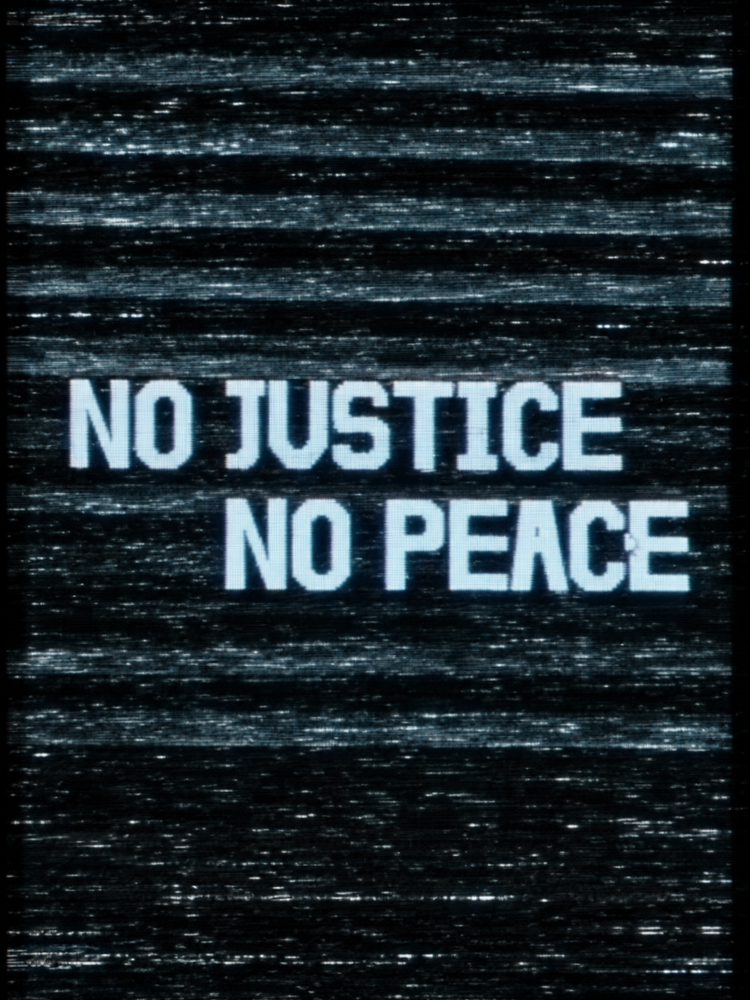
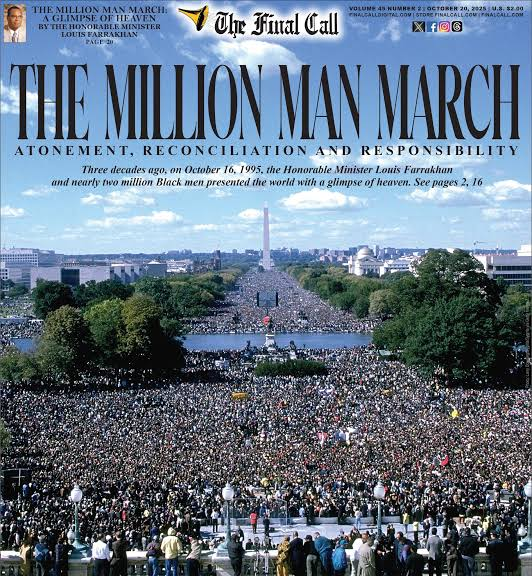
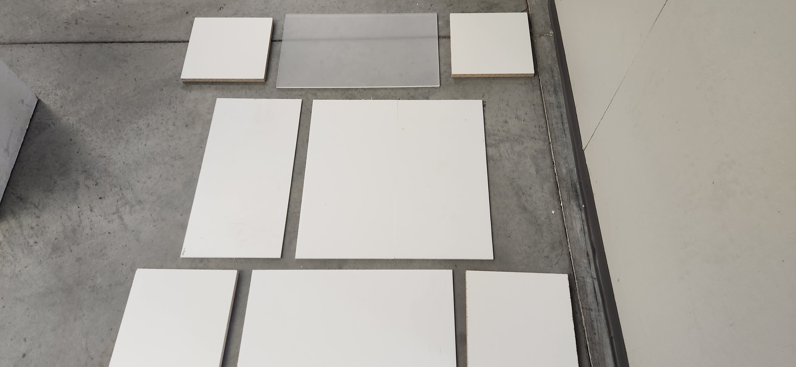
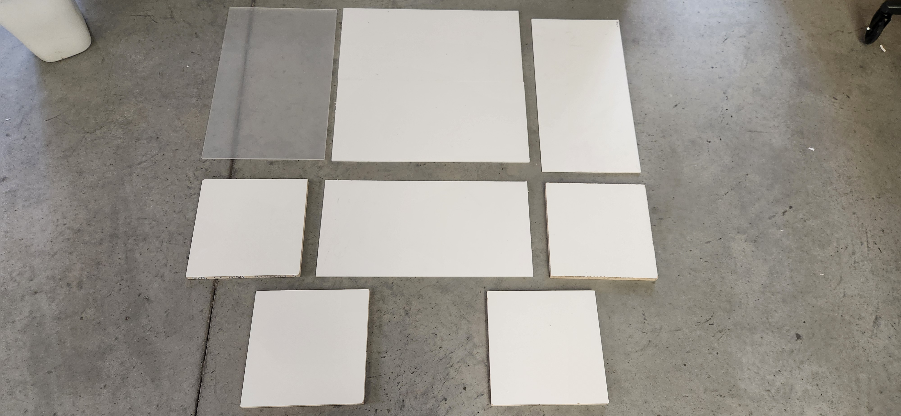
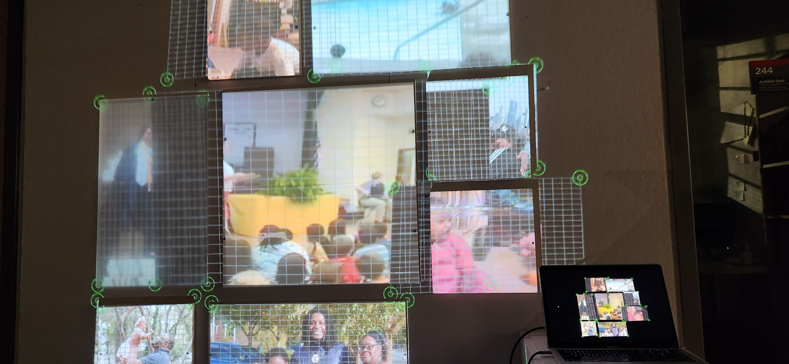
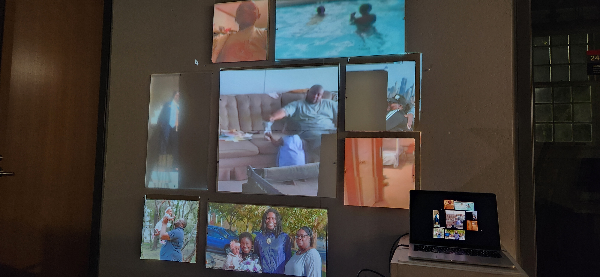
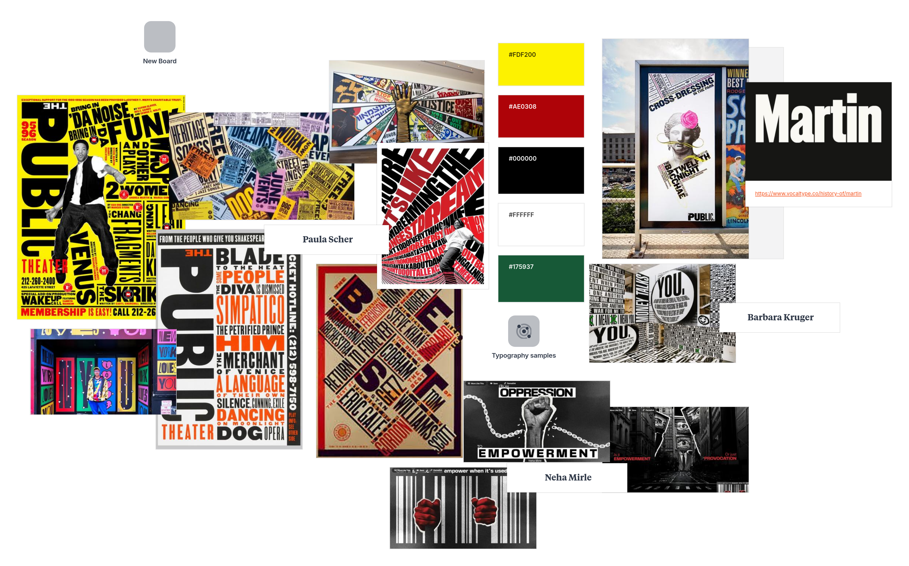

MK STUDIO / FEATURED PROJECT
No Justice, No Peace
Projection Mapping + Historical + Creative Production

Watch the Project

Synopsis
No Justice, No Peace is a projection-mapping installation that revisits the 1995 Million Man March in Washington, D.C., exploring the continued relevance of its messages surrounding racial justice, unity, and social change.
Using boards as projection surfaces, the installation shows historical speeches by figures such as Maya Angelou, Louis Farrakhan, and Ayanide. While footage of the speakers plays across the central structure, surrounding surfaces display historical and contemporary news headlines, photographs, and footage that connect the issues discussed during the march to ongoing conversations today.
Original starting as a typography project grew to something bigger. Developed using Java in Processing, the installation combines historical documentation, spatial storytelling, and projection mapping to create a layered visual experience. By juxtaposing the voices of the past with imagery from the present, No Justice, No Peace invites audiences to reflect on how much has changed, how much remains unresolved, and why these conversations continue to matter.
Behind the Scenes




